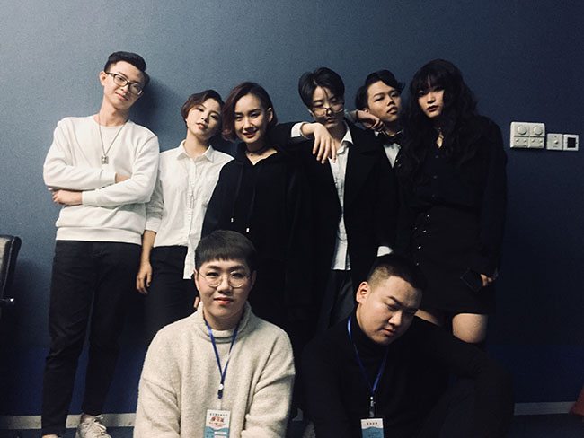
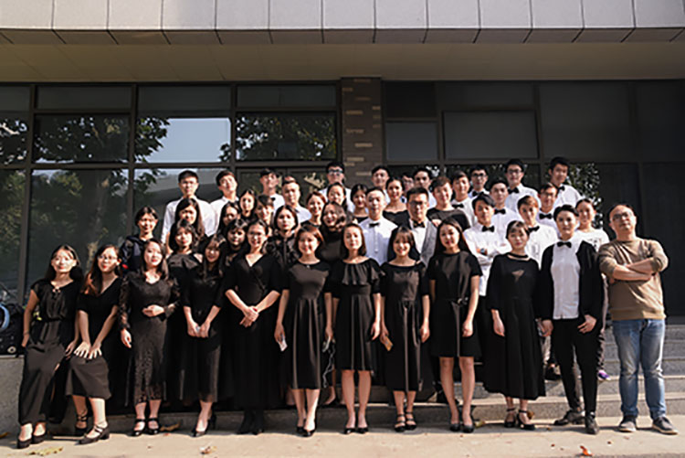

为中国大陆高校阿卡贝拉先行者，09年成团，隶属于中南财经政法大学大学生声乐团， 现已发展至第八代成员。乐团擅长各种曲风，尤以流行作品改编见长。演唱作品多由团 内成员创作、编曲，更有华中地区知名音乐人士进行指导、监制。圈圈的团员都是财大 的在校生。已发布的视频作品有《卷珠帘》、《传奇》、《龙的传人》等。
阿卡贝拉是意大利语A Cappella的音译，直接意译是“教堂的风格”，这个词可以古老到跟西 方音乐的起源密切相关，代表风格是Gregorian Chants。现在A Cappella在欧美用于指那些不 需要乐器伴奏，仅仅使用人声演唱的和声音乐作品，大致上跟中译的无伴奏合唱对等。但是从 二十世纪初开始，这种只用人声“唱和声”的古典音乐形式开始跟流行、爵士、民谣甚至是摇滚 等音乐风格结合上了，并慢慢地演化成了现代的阿卡贝拉（Contemporary A Cappella），可以 说古典形式跟流行风潮的结合就是现代阿卡贝拉的最大特点。 
中南财经政法大学大学生声乐团,简称校声乐团，是隶属校团委的校内唯一校级学生声乐团体， 由原大学生合唱团与声乐组合并成立，是集合唱、重唱、独唱、阿卡贝拉无伴奏重唱为一体的 多元化的的声乐团体，常年聘请资深专业音乐教师进行指导，代表学校参加各级演出和比赛并 取得优异成绩。
在中南大，有一个组织为音乐而生
在大大小小的舞台上，都有这个组织团员的靓丽身影
歌尽繁华，歌到荼蘼
至净至纯，歌者无敌
为声而生
我们不仅有美妙动听的《The seal lullaby》、《Ride The Chariot》，还有气势恢宏的 《大漠之夜》、《八骏赞》，情真意切的《游子情思》、《伦敦格里小调》，激励人心的 《As Long As I Have Music》、和耐人寻味的《夜来香》。甚至还有老少咸宜的流行歌曲 《Java Jive》、《一想到你呀》《Michael Jackson Medley》、《心动》等等歌曲的合唱版本 我们都在精心排练哟，你有没有很心动呢~
校声乐团在每年五六月份都会举办”声夏光年 忆声有你“专场室内音乐会，这是我们一年来训练的 一次汇报演出，更是所有校声人的节日，我们也在努力为大家奉献更好的歌曲。

点我返回